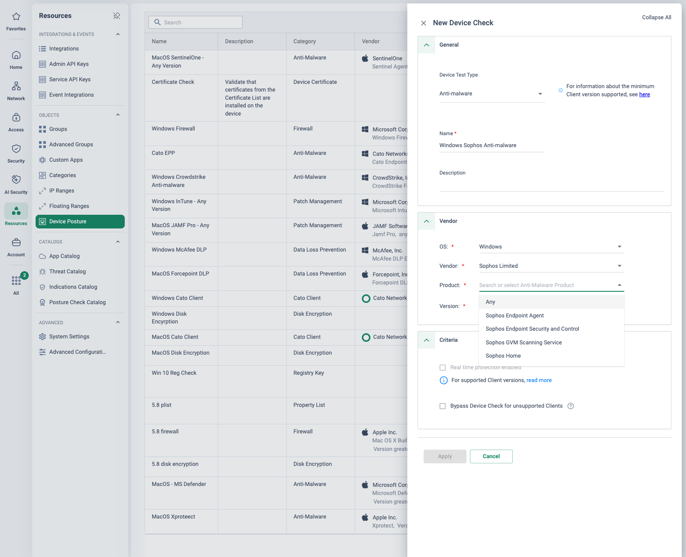

Why this matters — and why now
Sophos accounts do not suffer from console sprawl — Sophos Central really does manage firewalls, endpoint and MDR from one cloud console, and opening with a consolidation pitch will not land. What puts this migration on the table is a forced-refresh calendar: every XG-series firewall has been end-of-life and end-of-support since 31 March 2025 (the box keeps running, but any new vulnerability stays unpatched, and SFOS v21+ never supported XG), licence prices rose ~30% on the way out, XGS hardware and subscriptions went up a further 10% globally from 1 July 2026, and the remote-access products the customer bought are being retired or repackaged — the standalone SSL VPN client is long EOL, and standalone ZTNA disappeared into the Sophos Workspace Protection bundle between February and May 2026, with Sophos itself telling MSPs "a price increase will apply in most cases".
The refresh money is being spent either way. The honest question for the customer is whether it buys another appliance cycle — sizing, HA pairs, firmware and hotfixes, WAN-facing portals — or removes the appliance cycle entirely. The objective: replace the network stack (XGS, SD-RED, the Central Orchestration VPN overlay, Sophos Connect and ZTNA) with Cato, keep the Sophos endpoint stack, and give every cutover step a rollback.
The calendar, the CVE record — and how to use both fairly
Map the customer's renewal dates against this calendar in discovery — the July 2026 hardware rise and the Workspace Protection repricing are natural decision forcing-points:
| Sophos milestone | Date | Consequence |
|---|---|---|
| XG-series licence prices raised ~30% | 1 Oct 2024 | Renewal shock on ageing hardware |
| Last order date for XG hardware renewal SKUs | 31 Jan 2025 | No more paid extensions |
| All XG-series hardware end-of-life / end-of-support | 31 Mar 2025 | Runs on, unpatched; staying current means buying XGS |
| SG/UTM renewal SKUs raised 20% | 1 Jun 2025 | Same squeeze on the older SG estate |
| ZTNA gateways on old ESXi/Hyper-V or EOL SFOS unsupported | 1 Oct 2025 | Forced gateway upgrades |
| SFOS v22 released — requires XGS or virtual; no XG/SG support | Dec 2025 | Software carrot tied to hardware refresh |
| Sophos Workspace Protection GA; ZTNA auto-upgraded into it | late Feb 2026 | New bundle, new pricing at renewal |
| MSP ZTNA billing moves to Workspace Protection — "a price increase will apply in most cases" | late Apr 2026 | MSP-billed ZTNA gets dearer |
| Standalone ZTNA term SKUs no longer orderable | 1 May 2026 | The product as bought ceases to exist |
| 10% global price rise on XGS hardware and subscriptions | 1 Jul 2026 | The refresh quote just went up again |
Pacific Rim — five years of targeted attacks Oct 2024
Sophos' own Pacific Rim report documents a five-year campaign by interlinked China-based actors (TTP overlaps with Volt Typhoon, APT31 and APT41) specifically targeting Sophos firewalls — zero-days used to plant webshells and rootkits on WAN-facing portals. Exploited-in-the-wild Sophos firewall CVEs in the CISA KEV catalogue include CVE-2020-12271 ("Asnarök" pre-auth SQLi → RCE), CVE-2020-15069, CVE-2020-25223 (SG UTM), CVE-2020-29574 (legacy CyberoamOS), CVE-2022-1040 and CVE-2022-3236 — all reachable via the User Portal, web admin or clientless-access surfaces. A December 2024 trio (two rated CVSS 9.8) was hotfixed before broad exploitation.
Use it architecturally, not as vendor-shaming
Frame this fairly: Sophos handled Pacific Rim with unusual transparency, ships hotfixes automatically by default, and fixed the 2024 trio fast. The argument is that every WAN-facing appliance portal — any vendor; the same KEV table exists for Fortinet, Palo Alto, Cisco and Ivanti — is attack surface the customer must patch on the customer's timeline. Even SFOS v22's headline features (hardened kernel, an embedded XDR sensor watching the firewall itself) are about defending the appliance — evidence the appliance remains the attack surface. A cloud-delivered PoP removes that class of exposure from the estate, including the firewall-hosted ZTNA gateway and VPN portal.
“Which of your firewalls are still XG — and who is patching them now support has ended? What does your XGS refresh quote look like after July 2026? And what happens to your ZTNA seat price when it becomes Workspace Protection at renewal?”
Keep the Sophos endpoint stack — replace the network stack
Say this explicitly in the room; it builds credibility and narrows the deal to winnable scope. Sophos is a Leader in the Gartner Magic Quadrant for Endpoint Protection Platforms for the 17th consecutive report (2026), a 2025 Gartner Peer Insights Customers' Choice for both EPP and XDR, and reported 26,000+ MDR customers as of January 2025 (37% growth in 2024). The endpoint stack is usually the reason the account is a Sophos shop at all — and none of it requires a Sophos Firewall. Moving the network to Cato costs the customer nothing on the endpoint side.
| Stays in Sophos Central | Moves to Cato |
|---|---|
| Sophos Endpoint / Intercept X | XGS/XG firewalls and their subscriptions |
| Sophos XDR (endpoint) | SD-RED site devices |
| Sophos MDR service | Central Orchestration SD-WAN VPN overlay |
| The MSP's endpoint management relationship | Sophos Connect remote access and the firewall VPN portal |
| Sophos ZTNA / Workspace Protection (network access) |
Accuracy note — do not claim "Cato has no endpoint"
Cato sells Cato EPP — a SASE-managed endpoint protection platform powered by Bitdefender's prevention engine, managed from CMA and feeding the same data lake as Cato XDR (launched January 2024). The honest positioning: Cato EPP exists as a consolidation option later, but Sophos' endpoint stack is a Gartner MQ Leader the customer already owns and staffs — replacing it is a separate conversation, not a prerequisite. Cato does not sell a human-led endpoint MDR equivalent to Sophos MDR; keep that boundary clean.
Be upfront about the two real losses
Synchronized Security / Security Heartbeat (firewall↔endpoint health signalling and auto-isolation) and the v21.5 NDR Essentials feed both disappear with the XGS. The replacements: Cato Device Posture checks (anti-malware/EDR presence, including third-party agents) gating access continuously via Client Connectivity Policy; and Cato XDR, whose native network sensor is the PoP itself — no appliance taps, and it covers remote users too. Surface both in discovery, not after the objection lands.
Sophos is explicitly channel-first — it defends 250,000+ customers through MSPs, with monthly consumption billing via MSP Connect Flex and the MSP Elevate programme (launched May 2025). A rip-and-replace pitched to the end customer that strands the MSP's margin will be resisted. Bring the MSP into the deal: Cato's partner-delivered model, or split the account — the MSP keeps endpoint/MDR management in Sophos Central and adds Cato as the network platform. Where firewall and endpoint renew together, separate the renewals so the endpoint stack can stay without dragging the firewall renewal along.
What maps to what
The network estate collapses into one cloud platform and one global rulebase — Sophos Central stays, but the network objects leave it. The table is the translation sheet.
| Sophos component | Cato equivalent | Migration note |
|---|---|---|
| XGS/XG firewall (SFOS) — firewall rules, IPS, ATP | Cato FWaaS (Internet + WAN Firewall), IPS and Anti-Malware at the PoP | Removes appliance sizing, HA pairs, the firmware/hotfix cycle and WAN-facing portals |
| Web Protection subscription (web filtering, on-box TLS inspection) | Cato SWG categories + cloud TLS inspection | Cloud TLS inspection scales without appliance headroom maths (see gotchas) |
| Zero-Day Protection (sandboxing / ML file analysis) | Cato Anti-Malware and threat prevention in the same single pass | Engine-for-engine coverage at the PoP, applied once to decrypted traffic |
| Xstream SD-WAN + Central Orchestration VPN mesh | Cato Socket (X1500/X1600/X1700) + global private backbone | The Sophos overlay is firewall-to-firewall IPsec over the public internet — no private middle-mile; Cato adds the backbone and any-to-any PoP routing |
| SD-RED 20/60 edge devices | Cato Socket — zero-touch, self-provisioning | SD-RED has no local inspection: traffic hairpins to the hub firewall. A Socket site gets full inspection at the nearest PoP, no hairpin |
| Sophos Connect (IPsec/SSL VPN) + firewall VPN portal | Cato Client (SDP/ZTNA) + clientless browser access | No VPN termination on an appliance — users hit the nearest PoP with the same inspection as sites |
| Sophos ZTNA / Workspace Protection (agent + firewall-hosted or VM gateway) | Cato ZTNA — Client + Client Connectivity Policy + Device Posture | Delivered from the PoP, not from a gateway hosted on the customer's edge firewall |
| Sophos DNS Protection | Cato DNS Security (DNS Protections in IPS) | Inline at the PoP for all site and user traffic |
| Sophos Central — network portion (firewall management, reporting, SD-WAN groups) | Cato Management Application (CMA) | Central stays for endpoint/XDR/MDR — only the network objects migrate |
| NDR Essentials (v21.5, Xstream bundle) | Cato XDR network stories — the native sensor is the PoP | No appliance needed for network detection; remote users covered too |
| Synchronized Security / Security Heartbeat | Nearest equivalent: Device Posture (EPP/AV checks incl. third-party) gating access via Client Connectivity Policy | No direct equivalent — be upfront; agree the replacement runbook in discovery |
Recommended migration path
This page is authored from vendor documentation and Cato PS methodology research; it is not a delivery-verified runbook. Review the design — especially the hub interconnect, route filtering and rollback details, and anything contract-dependent — with Cato Professional Services before committing it to a customer plan.
The arc follows the Cato PS methodology — Export → Review & Map → Deploy → Optimise, run as discovery → co-existence → pilot → phased cutover → decommission. Mid-market Sophos estates are usually small enough (5–50 sites) for parallel connectivity at each site: a Socket alongside the XGS with an L3 handoff, moving subnets progressively. For hub-and-spoke estates, an interconnect at the hub XGS (IPsec or eBGP handoff) carries un-migrated SD-RED and branch traffic to Cato-side resources during the transition — the same hub-interconnect pattern PS uses for FortiGate estates. The Sophos overlay stays authoritative for un-migrated sites, with default routes filtered at the interconnect.
-
Phase 0 — Discovery and design
Inventory the estate: firewall models and SFOS versions (any XG left is already unsupported — lead with it), SD-RED sites and their hub firewalls, Central Orchestration connection groups (mesh vs hub-and-spoke), Sophos Connect user counts and whether IPsec or SSL VPN, ZTNA apps and gateways (firewall-hosted vs VM), Standard vs Xstream bundles and renewal dates per box, and the MSP contract terms including Flex billing. Export the SFOS rule bases (backup files plus the XML API/config export) per appliance into the Review & Map workbook. Map renewal dates against the price-rise calendar above, and identify Synchronized Security dependencies (heartbeat rules, auto-isolation runbooks) so the replacement is agreed before cutover.
-
Phase 1 — Co-existence foundation
Stand up the Cato account: CMA admin model, IdP SSO and SCIM against Entra ID (the estate is almost always Microsoft), and a base policy from Cato best-practice templates. Deploy the parallel Socket(s): per-site L3 handoffs for parallel-connectivity estates, or the hub interconnect (IPsec or eBGP) at the hub XGS for hub-and-spoke. Keep the Sophos overlay authoritative for un-migrated sites and filter default routes at the interconnect.
-
Phase 2 — Pilot
Security → Internet Firewall Security → TLS Inspection
Pick 1–3 representative sites: at least one SD-RED site (the simplest possible swap — an unmanaged tunnel device for a zero-touch Socket) and one XGS site with local rules. Put pilot users on the Cato Client alongside the Sophos Connect cohorts — validate SSO, posture and app access, and test Client/Connect coexistence on shared machines (and behaviour alongside the Sophos endpoint agent) before scaling; no vendor statement covers this either way, so prove it in pilot. Map SFOS firewall rules, web policy categories and TLS exclusions to Cato Internet/WAN Firewall rules, categories and TLS-inspection rules — review-and-map, not lift-and-shift: per-box rule bases collapse into one global policy. Run IPS and TLS inspection in monitor mode first.
-
Phase 3 — Phased site cutover
Network → Sites
SD-RED sites first: ship a Socket, move the LAN, delete the RED interface on the hub firewall — rollback is re-plugging the RED, which re-establishes its tunnel. Then XGS sites by wave: Socket in parallel → move subnets/VLANs → withdraw the site from its Central Orchestration connection group → prefixes propagate via the interconnect → validate → leave the XGS racked through the soak window. Rollback is re-adding the connection-group membership. Update anything keyed to site egress IPs (SaaS allowlists, partner firewalls) per wave.
-
Phase 4 — Users, remote access and ZTNA
Access → Client Connectivity Policy Access → Device Posture
Roll out the Cato Client per cohort via Intune/MDM — split-tunnel first, then always-on with Client Connectivity Policy and Device Posture. Remove Sophos Connect profiles per cohort and retire the firewall VPN portal (a WAN-facing portal — see the CVE record) as the last cohort clears. Recreate ZTNA per-app policies as Cato application access rules and decommission firewall-hosted gateways with the firewalls. Time this against the Workspace Protection forced transition (Feb–May 2026) — customers mid-transition have a natural exit point before renewal repricing.
-
Phase 5 — Optimise and decommission
Tighten monitor-mode rules to block, widen TLS-inspection scope, tune QoS and bandwidth priorities on the backbone. Decommission in order: SD-REDs → branch XGS → hub XGS/interconnect → VPN portal and ZTNA gateways → lapse the Network/Web/Xstream firewall subscriptions at renewal. Retain Sophos Central with the Endpoint/XDR/MDR licences — and flag to the MSP that only the network SKUs are lapsing.
The portals leave the estate
User Portal, VPN portal and firewall-hosted ZTNA gateway — the surfaces in the KEV record — are retired with the appliances, not patched faster.
Rollback is designed in
Re-plug an SD-RED and its tunnel re-establishes; re-add a connection-group membership and the overlay reconverges. No rebuilds mid-window.
No inspection sizing maths
TLS inspection happens at the PoP — no picking a box big enough to turn inspection on, and no mid-life upgrade when it runs out.
The endpoint stack stays
Sophos Central keeps endpoint, XDR and MDR; the MSP keeps that relationship. The deal is the network stack, not a bet-everything swap.
Cutover mechanics per estate element
| Element | Cutover | Rollback |
|---|---|---|
| SD-RED site | Ship a zero-touch Socket, move the LAN, delete the RED interface on the hub firewall | Re-plug the RED — it re-establishes its tunnel to the hub |
| XGS branch | Parallel Socket → move subnets → withdraw from the Central Orchestration connection group → validate → soak with the XGS still racked | Re-add the connection-group membership |
| Hub XGS | Interconnect (IPsec or eBGP) carries un-migrated traffic throughout; hub migrates last, once its spokes are clear | The interconnect stays up until the final wave — nothing to unwind early |
| Remote users | Cato Client per cohort via Intune; remove Sophos Connect profiles per cohort; VPN portal retired last | Re-push the Connect profile to the cohort |
Check RED operating modes in discovery
RED/SD-RED sites can run in transparent/bridged modes where the remote LAN is effectively part of the hub network — L2 semantics. Cato sites are routed (L3). Where a site relied on bridging, plan re-addressing or local DHCP before its wave, not during the change window.
Agent coexistence — prove it in pilot
No vendor statement was found validating Sophos Connect (or the Sophos endpoint agent) alongside the Cato Client on one machine. Keep exactly one VPN/ZTNA data path active per endpoint, test the combinations on shared machines in the pilot cohort, and audit what is actually installed per cohort — estates that recently upgraded off the EOL SSL VPN client may have a mixed picture.
What will come up in the room
“Sophos is already one console”
True for the vendor suite — concede it. The counters: the network estate is still appliance-anchored (per-box firmware, hotfixes, HA pairs, hardware EOL cycles and WAN-facing portals); the SD-WAN overlay has no private backbone, so international or cloud-bound traffic rides the public internet between firewalls; and v22's headline features harden the appliance itself — evidence that the appliance remains the attack surface.
TLS-inspection sizing is the wedge
Sophos' own XGS marketing leads with 4.8–5× TLS-inspection throughput gains over XG (e.g. XG 86 at 75 Mbps → XGS 87 at 375 Mbps inspected) precisely because inspection throughput, not headline firewall throughput, is what runs out. Size any appliance comparison on inspected-traffic numbers — and position cloud TLS inspection as removing the sizing exercise, and the mid-life “bigger box to turn inspection on” upgrade, entirely.
“ZTNA is free with our firewall”
The gateway is free and built into SFOS 19.5 MR3+, but users are licensed per seat — and between February and May 2026 that seat licence became Workspace Protection, with Sophos itself warning MSPs that “a price increase will apply in most cases”. Also worth stating plainly: a ZTNA gateway hosted on the edge firewall means app access terminates on exactly the appliance class in the KEV record.
Synchronized Security loss
Firewall-triggered endpoint isolation and heartbeat-conditional rules disappear with the XGS. Replacements: Cato Device Posture checks (anti-malware/EDR presence, including third-party) gating access continuously via Client Connectivity Policy, plus MDR-side response through Sophos' own tooling. Raise it in discovery yourself — it lands far worse as a customer objection later.
NDR Essentials disappears with the firewall
It is an Xstream-bundle feature of v21.5, so it goes when the firewall goes. Counter: Cato XDR's native network sensor is the PoP itself — no appliance needed for network detection, and remote users are covered too, which an on-box sensor never sees.
Re-onboarding users is a practised motion
The standalone SSL VPN client went EOL on 31 January 2022 and SFOS 20.0 MR1+ refuses its connections — many estates have already re-onboarded users to Sophos Connect once. Moving those cohorts to the Cato Client is a like-for-like motion they have already practised, not a novel disruption.
Sophos patched fast, ships automatic hotfixes by default, and published Pacific Rim voluntarily. Use the KEV record to argue that the appliance category is structurally exposed — the same table exists for Fortinet, Palo Alto, Cisco and Ivanti — and that Cato removes the category. Never argue that Sophos is uniquely bad; the customer chose them, and the endpoint half of the pitch depends on respecting that choice. Note also: SD-RED 20/60 hardware has no declared end-of-life at the time of research — do not claim it is EOL.
How to prove it in the customer's tenant
The pitch above is "keep Sophos endpoint, replace the network stack" — so the PoV proves exactly that, in a small bounded pilot: one SD-RED-served branch moved to a Socket with the XGS hub handoff carrying cross-estate traffic, a pilot cohort running the Cato Client alongside the Sophos endpoint agent, one bounded SFOS policy slice at parity in monitor mode, and a rollback that is literally re-plugging the SD-RED. The headline criterion is the one this page flags as unproven either way: agent coexistence. No vendor statement validates the Sophos endpoint agent and the Cato Client on one machine — the PoV is where that gets proven, on the customer's own build, with the evidence written down. Agree the criteria below before configuring anything, per Running a Cato PoV, and run the register to a fixed end date.
| # | Success criterion | What we demonstrate | Evidence artefact | Where it lives |
|---|---|---|---|---|
| 1 | Sophos endpoint agent and Cato Client coexist — no conflicts observed | Both agents run together on every pilot device for the full PoV window: tunnel up, protection active, no adapter/route conflicts, no TLS breakage, no material performance hit | Completed coexistence test matrix (below) + per-device experience stats | Evidence doc · Monitor → Experience Monitoring |
| 2 | SD-RED branch runs on a Socket | The pilot branch, previously SD-RED-served, passes all traffic via its nearest PoP and still reaches un-migrated resources through the XGS hub handoff | Topology screenshot (site up, tunnels green) + eBGP routes received at the hub | Monitor → Topology · Network → Sites |
| 3 | Policy slice at parity in monitor mode | A bounded SFOS rule slice runs as Cato rules with Track = Event; hits over a business week reconcile against the SFOS per-rule counters | Rule-hit event export + hit counts vs the SFOS baseline in the mapping workbook | Monitor → Events · Security → Internet Firewall |
| 4 | Pilot cohort works a normal week | Pilot users on the Cato Client (Sophos endpoint still installed) work a full week — experience baselined Good, no coexistence-related tickets | Experience Monitoring baseline (per-user scores, TTFB) + helpdesk ticket check | Monitor → Experience Monitoring |
| 5 | Rollback drill passes | Re-plug the SD-RED: its tunnel re-establishes to the hub and the branch reverts inside the agreed window — then swap forward again | Timed drill record + hub tunnel status before/after | Evidence doc · XGS hub console |
- Scope, bounded: one SD-RED-served branch, the hub handoff at the XGS, a pilot cohort of 5–10 users, and one SFOS policy slice (a handful of egress/web rules with real traffic behind them). Everything else is out of scope, in writing.
- Licences: PoV/trial licences for the pilot Socket site and the SDP user seats. Nothing lapses on the Sophos side — the SD-RED stays racked, the hub keeps its config, and the endpoint licences are untouched.
- Identity first: Entra ID SSO connected and SCIM syncing the pilot group — group-scoped rules and per-user evidence depend on it.
- TLS inspection staged where content parity is tested: Cato root certificate deployed to pilot devices in advance, TLSi scoped to the pilot cohort — see TLS Inspection: Staged Rollout Playbook. This is also a coexistence test surface (Sophos endpoint SSL scanning layers under it), so stage it deliberately.
- The Sophos baseline captured: SFOS slice exported with per-rule traffic counters, and the pilot branch's RED operating mode recorded (bridged REDs need re-addressing before the swap).
- The MSP briefed: they run the Sophos estate — the PoV touches nothing they cannot re-plug, and they should be in the weekly sync.
Configuration walkthrough
-
Stand up the XGS hub handoff — IPsec IKEv2 site
Network → Sites
Create the hub as an IPsec IKEv2 site: Connection Type IPsec IKEv2, Connection Mode Bidirectional, primary tunnel between a Cato public IP (allocated in the CMA) and the XGS WAN IP with a pre-shared key (up to 64 characters), and a secondary tunnel to a different Cato public IP for resilience. Set the last-mile bandwidth to the hub's real figures; for 100 Mbps+ links use AES 128 GCM-16 or AES 256 GCM-16, and leave the IKE Init/Auth parameters on Automatic unless the XGS IPsec profile demands otherwise. On the Sophos side this is a standard site-to-site IPsec policy — no RED, no Central Orchestration involvement. (Docs: Configuring IPsec IKEv2 sites.)
-
Add the eBGP neighbour over the tunnel — and filter it
Network → Sites
In the site's IPsec settings define the BGP private IPs (Cato PoP side and site side), then add the BGP neighbour under Site Settings → BGP — one neighbour per tunnel, two maximum per IPsec site. The route policy is the co-existence design from the diagram above, made concrete:
# eBGP handoff at the hub XGS — pilot design ASN Settings: Cato ASN 65001 · Peer ASN (XGS) 65002 # private ASNs — agree with the customer Advertise: Summary routes # migrated (Cato-side) prefixes only Accept: un-migrated site prefixes from the XGS # never 0.0.0.0/0 — drop default routes Additional: Hold Time 60 · Keepalive 20 (defaults) # match timers on the SFOS side
The Sophos overlay stays authoritative for every un-migrated site: the handoff carries pilot-branch ↔ legacy-estate traffic and nothing else. (Docs: Configuring BGP neighbors for an IPsec connection.)
-
Swap the pilot branch: SD-RED out, Socket in
Network → Sites Monitor → Topology
Create the branch site with its native range, ship the Socket, and let it self-provision — the swap is an unmanaged tunnel device for a zero-touch one. In the change window: plug the Socket into the branch WAN, move the LAN, confirm the site comes up in Topology and that the branch reaches an un-migrated resource across the handoff. Do not delete the RED interface on the hub firewall — for the PoV the SD-RED goes on a shelf at the branch, powered off, config intact. That shelf is the rollback (criterion 5). If the RED ran in a transparent/bridged mode, the re-addressing agreed in prerequisites happens before this window, not during it.
-
Enrol the pilot cohort — Cato Client alongside the Sophos endpoint agent
Access → Users Access → Device Posture
Push the Cato Client to the 5–10 pilot devices via Intune/MDM, split-tunnel first. The Sophos endpoint agent (Intercept X) stays installed and fully enabled — that is the point. Remove the Sophos Connect VPN profile from pilot devices so exactly one VPN/ZTNA data path is active per endpoint. Then create an Anti-Malware device check: the check runs on an OPSWAT engine with a third-party vendor list, so confirm the Sophos endpoint product is selectable in the Vendor drop-down and build a Device Posture profile from it — this is the live demonstration that posture checks can see the Sophos agent, the foundation of the Security Heartbeat replacement story. (Docs: Creating Device Posture profiles and device checks.)

The live proof this step calls for (lab tenant): the anti-malware check's OPSWAT vendor list with Sophos Limited selected and its products enumerated — Intercept X's agent is visible to Cato posture, so the Security Heartbeat replacement isn't a promise, it's a drop-down. -
Run the endpoint-coexistence test matrix
Work through the matrix below on every pilot device build — it is the evidence behind criterion 1, so record results per device, dated, including anything that did conflict and what resolved it. A pass is "no conflicts observed on these builds over the PoV window", not a vendor certification.
-
Translate the policy slice — monitor-first
Security → Internet Firewall Security → TLS Inspection Monitor → Events
Map the agreed SFOS slice to Cato Internet Firewall rules scoped to the pilot site and cohort — categories mapped by intent per the companion Sophos Policy Migration page, would-be blocks deployed as Allow with Track = Event so every hit lands as an event and nothing blocks until the evidence says it should. Flag any slice rule that carried a Security Heartbeat condition in the workbook — its translation needs the Device Posture profile from step 4, not a silent broadening. Where the slice includes content-level controls, add a TLS Inspection rule scoped to the pilot cohort (Inspect, untrusted certificates on the default Allow while piloting) — after the coexistence matrix has cleared the TLS layering tests. (Docs: Managing the Internet Firewall policy · Configuring TLS Inspection policy.)
-
Run the rollback drill — then swap forward again
Monitor → Topology
Mid-PoV, in a booked window: unplug the Socket, re-plug the SD-RED, and time how long the branch takes to revert to the hub (the RED re-establishes its tunnel on power-up; nothing to configure). Verify branch traffic on the Sophos path, record the drill, then swap forward to the Socket again. Doing this during the PoV — not promising it — is what makes the phased-cutover story credible for the remaining SD-RED estate.
The endpoint-coexistence test matrix
This is the artefact criterion 1 stands on. The page above is explicit that no vendor statement covers this pairing either way — so the matrix documents exactly what was tested, on what build, with what result:
| Test area | What to test | Pass looks like |
|---|---|---|
| Tunnel adapters & routing | Enumerate network adapters and the routing table with both agents installed; connect/disconnect the Cato Client repeatedly; sleep/resume and reboot cycles | One virtual adapter owning the tunnel, no leftover Sophos Connect/SSL-VPN adapters, no route flapping or DNS hijack after resume |
| TLS interception layering | With Sophos endpoint web protection/SSL scanning enabled and Cato TLSi inspecting pilot traffic, browse a test set: standard HTTPS, certificate-pinned apps, the customer's core SaaS | No certificate errors; the browser shows the expected chain; TLSi events land in CMA; Sophos endpoint web protection still functions — record which layer saw what |
| Detection integrity | EICAR test file downloaded through the Cato tunnel with both agents live | The expected engine(s) respond, and neither agent's detection is broken by the other's presence — record which engine caught it, without promising both |
| Performance | Boot-to-connected time, a throughput transfer, and CPU/RAM of both agents at idle and under load — before and after Client install | No material regression; per-device experience score and TTFB in Experience Monitoring stay Good through the pilot week |
| Update & tamper behaviour | Sophos tamper protection stays on; upgrade the Cato Client mid-pilot; let the Sophos agent take its normal updates | Both agents update independently; neither disables or quarantines the other; tunnel and protection survive both update paths |
What good output looks like
Two CMA surfaces carry most of the evidence register — rule-hit events for the parity criterion, and the Experience Monitoring baseline for the cohort and coexistence criteria:


Troubleshooting the pilot
Sophos Connect remnants
Cato Client won't connect, or routes vanish after resume: leftover Connect or legacy SSL-VPN virtual adapters and services still claim routes. Audit installed software and adapters on every pilot device, uninstall Connect (never the endpoint agent), reboot, and re-run the adapter test.
Heartbeat rules lose their condition
A slice rule that was conditioned on Security Heartbeat translates into something broader than the customer ever ran. The workbook should flag every heartbeat condition; re-express each as the Device Posture profile from step 4 (anti-malware check seeing the Sophos agent) in Client Connectivity Policy or rule criteria — same framing as the policy page's mapping table.
Double TLS interception
Certificate errors on pilot devices usually mean layering: Sophos endpoint SSL scanning under Cato TLSi. Check who signed the chain the browser sees. Fix by staging — Cato root cert deployed first, TLSi enabled for the pilot scope only after the matrix layering test passes, and app bypasses for anything certificate-pinned.
Handoff routes wrong
Branch can't reach un-migrated subnets, or worse, internet traffic starts crossing the handoff: route policy. Check the BGP neighbour's Advertise/Accept settings — summary routes out, un-migrated prefixes in, default routes dropped in both directions. The Sophos overlay stays authoritative for everything un-migrated.
The RED was bridged
The swapped branch loses DHCP or L2-adjacent kit stops working: the SD-RED ran in a transparent/bridged mode and the LAN was really the hub's network. This is a discovery miss, not a Socket fault — fall back (re-plug the RED), complete the re-addressing and local DHCP plan, and re-run the window.
Pilot users not matching rules
Slice rules or posture-gated access behave inconsistently across the cohort: SCIM sync lag or group-name drift, not policy error. Confirm the pilot group has synced in Access → Users and the users resolve in events before judging any rule behaviour.
Gotchas & exit
- Coexistence is proven for these builds, not certified. The evidence says "no conflicts observed on the pilot fleet over the PoV window". If a conflict does appear, it goes in the register as a finding with its mitigation — that honesty is worth more than a clean-looking matrix.
- The heartbeat replacement is a design, not a like-for-like. Device Posture gates access continuously; it does not trigger Sophos-side endpoint isolation. The MDR/endpoint response path stays in Sophos tooling — keep that boundary clean in the wrap-up.
- Monitor mode means monitor. The parity slice must not block anything during the PoV — the single-pass engine will also inspect traffic the SFOS slice never saw, so expect new detections and triage them as findings, not incidents.
- Evidence outlives retention. Export events and screenshots weekly into the evidence doc rather than assuming they can be reconstructed at wrap-up.
Unwinding cleanly: if the decision is no (or paused), reverse in order — re-plug the SD-RED at the branch (already drilled), remove the Cato Client from pilot devices via Intune and re-push the Sophos Connect profile where users reverted, delete the eBGP neighbour and then the IPsec site at the hub, and disable the pilot rules and TLSi scope in the CMA. The Sophos estate is exactly as it was — nothing was decommissioned during the PoV. If the decision is yes, the pilot is wave one: the mapping workbook, the coexistence matrix and the drilled rollback become the phased-cutover plan in the migration path above.
Resources
Documentation
- What are Cato Sockets — zero-touch deployment (KB)
- What is the Cato Internet Firewall (KB)
- Device Posture profiles and checks (KB)
- Configuring the Client Connectivity Policy (KB)
- Using BGP in the Cato Cloud (KB)
- Provisioning users with SCIM (KB)
- Cato EPP — the accuracy-note context
- Sophos: XG-series hardware EOL FAQ
- Sophos: ZTNA transition to Workspace Protection
- Sophos: Pacific Rim report
- CISA Known Exploited Vulnerabilities catalogue